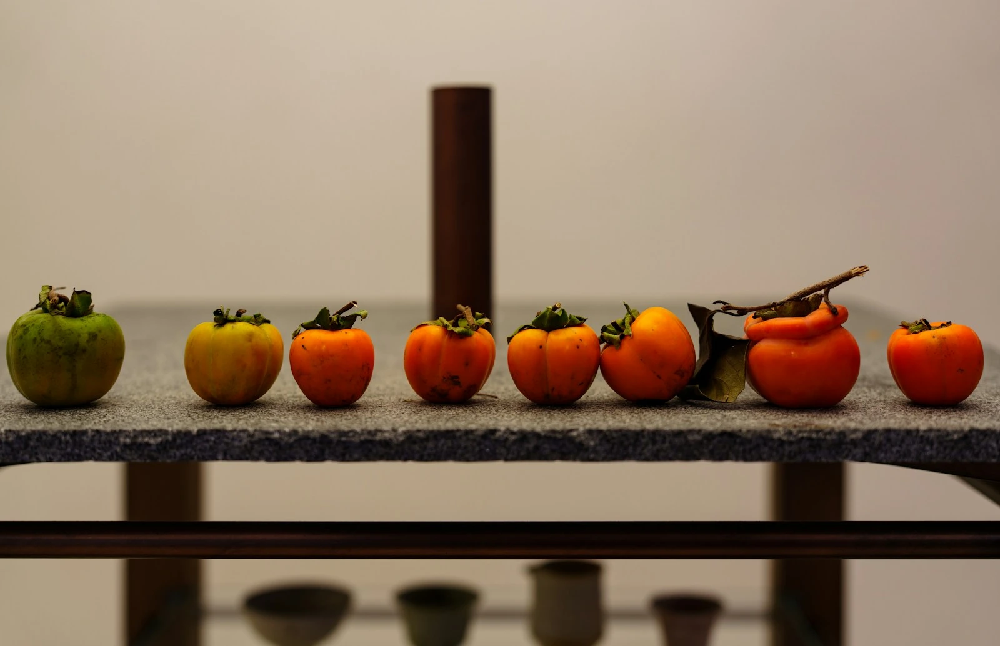

禾
太行果眸
TAIHANG FRUIT VISION
山野首页
识别工作台
山渠与产业
项目与成果
☰
山野首页
识别工作台
山渠与产业
项目与成果
太行果眸 · 山野序章
TAIHANG / A MOMENT OF RIPENING
CHAPTER 01 / 细看
天地有时 · 生长有序
一枚丹柿，收藏山野的光。
太 行 果 眸
看见成熟，智助丰收
00 / 06
艺术化山野 · 为丰收而来
跳过序章 ↗
AI 对话
×
示例演示 / 非识别结果

成熟，有不同的阶段。
未熟、转色期、着色期、完熟。项目采用四个外观分级标签。此卡片为预设说明，没有对照片执行识别。
体验本地图片预览 ↗